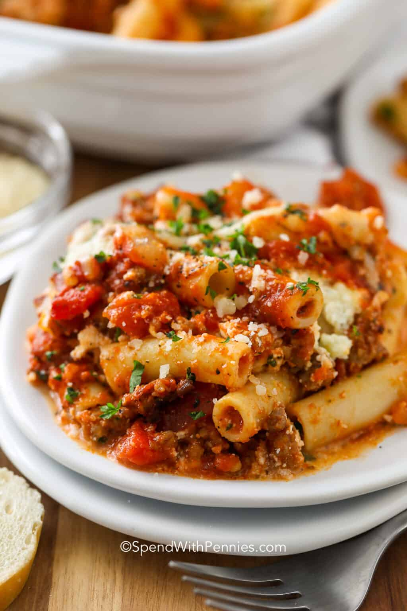

Baked Ziti

Baked ziti with ricotta is an easy twist on the classic lasagna. It rivals any restaurant pasta for less cost and it has heaps of flavor! This ziti dish is perfect to make ahead and it reheats and freezes well.
Cook once and enjoy for days!
Ingredients
- 1 pound Italian sausage
- 1 small onion diced
- 28 ounces pasta sauce or marinara sauce
- 14 ounces diced tomatoes undrained
- 2 teaspoons Italian seasoning
- ½ cup water
- 16 ounces ziti
- 15 ounces ricotta cheese
- 2 tablespoons fresh parsley
- 1 egg
- 2 cups mozzarella cheese shredded
- ¼ cup Parmesan cheese shredded
Steps
- Preheat oven to 375°F
- Brown ground sausage and onion breaking up until the sausage is fairly fine. Drain any fat.
- Add in Italian seasoning, water, tomatoes and pasta sauce. Simmer 10-15 minutes or until thickened.
- Meanwhile, boil ziti in salted water until al dente. Drain and rinse.
- In a small bowl, mix ricotta, egg, parsley, 1 cup mozzarella cheese, and parmesan cheese.
- Add a thin layer (about 1 cup) of sauce to the bottom of a greased 9x13 pan. Layer half of the ziti, top with all of the ricotta mixture, and half of the sauce.
- Add remaining ziti, remaining sauce, and top with remaining mozzarella cheese.
- Bake 25-30 minutes or until golden and bubbly.